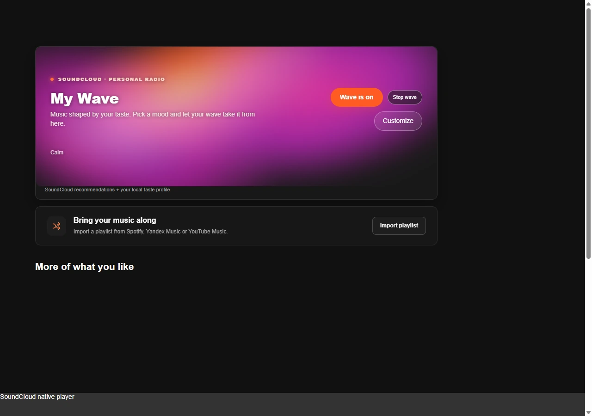
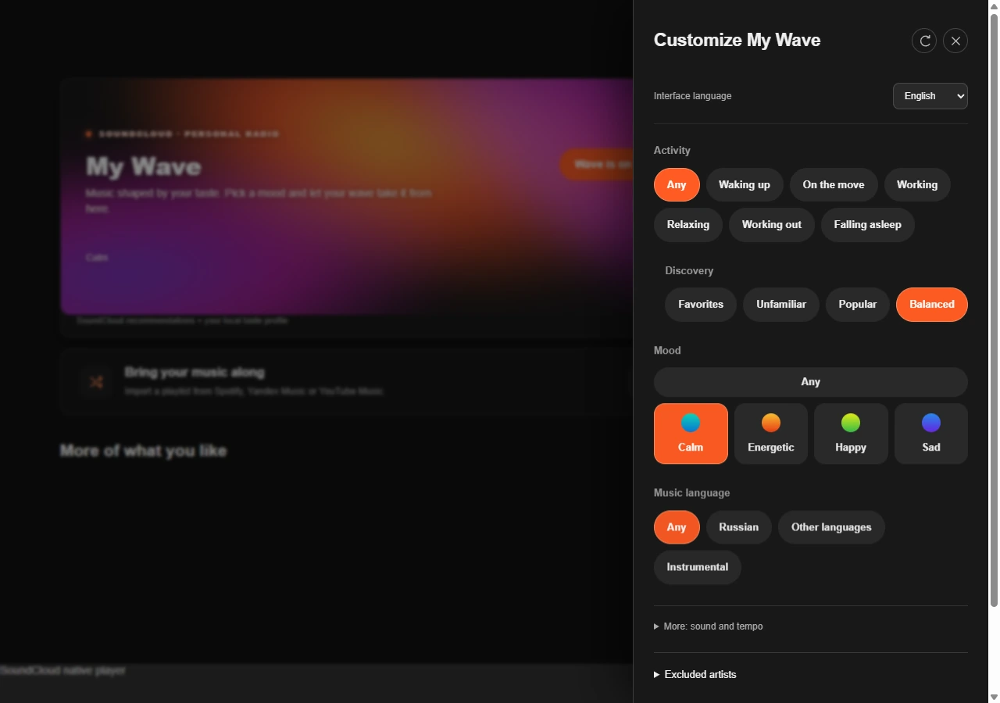

ТВОЙ SOUNDCLOUD, С ПРОДОЛЖЕНИЕМ
Хватитпо кругу.
Где-то есть твой следующий любимый трек. «Моя волна» поможет его найти — прямо в SoundCloud.
Бесплатно. Открытый код. Windows 10 / 11, x64.
01ЛИЧНЫЙ ПОТОК
Любимое —
точка отсчёта.
Не нужно каждый раз решать, что включить. Начни с того, что нравится, и дай музыке продолжиться.
От твоих треков — к новым
Похожие записи SoundCloud и собственный подбор. Лайки и реакции помогают задать направление.
Под текущий момент
Настроение, занятие, знакомство с музыкой и язык. Всё настраивается в одной панели.
Дальше уже есть что слушать
Следующие треки готовятся заранее. Музыка продолжает играть при смене страницы и сворачивании окна.


Твой день.
Твои настройки.
02КОЛЛЕКЦИЯ ПЕРЕЕЗЖАЕТ С ТОБОЙ
Плейлисты
не бросаем.
Собирал годами? Забирай с собой. Клиент найдёт версии треков в SoundCloud и соберёт из них плейлист.
Не всё нашлось — сохрани найденное. Источник недоступен — загрузи список через Worker или выбери файл CSV/TXT/TSV.
Подробнее о переносеОткрой публичный плейлист Spotify, скопируй ссылку и вставь её в импорт внутри клиента.
03ЧТО ЕЩЁ ВНУТРИ
Маленькие вещи.
Большая разница.
Это официальный SoundCloud?
Нет. Это независимый бесплатный форк soundcloud-rpc от rvelabs. Проект не связан с SoundCloud. Для прослушивания нужен свой аккаунт SoundCloud.
Как работает «Моя волна»?
Клиент использует похожие треки SoundCloud, собственное ранжирование и ваши реакции. Это не закрытый алгоритм Яндекс Музыки. Для начала добавьте несколько лайков или включите любимый трек. Точность настроения и темпа зависит от доступных метаданных.
Перенесутся все треки?
Импорт ищет существующие версии в SoundCloud, а не копирует аудиофайлы. Какие-то записи могут отсутствовать или быть недоступны. Найденную часть можно сохранить отдельно. Источник может вернуть неполный список; лимит плейлиста SoundCloud — 500 треков.
А если сервис не открывается в моей сети?
В F1 есть мастер личного Cloudflare Worker. Он может использоваться для резервного подключения SoundCloud и чтения публичных плейлистов. Нужен ваш аккаунт Cloudflare; сам Cloudflare должен быть доступен в сети. Для нового импорта через Worker обновите и клиент, и Worker до версии не ниже 0.28.6. Альтернатива для списка треков — импорт CSV/TXT/TSV.
Что нужно для установки?
Windows 10 или 11 (x64) и аккаунт SoundCloud. Скачайте установщик из GitHub Releases. Доверенной подписи издателя пока нет — Windows может показать предупреждение. Исходный код и контрольные суммы опубликованы вместе с релизом. Обновление сохраняет профиль.
СЛЕДУЮЩИЙ ТРЕК МОЖЕТ СТАТЬ ЛЮБИМЫМ
Дальше —
твоя музыка.
Бесплатно · Windows x64 · Нужен аккаунт SoundCloud